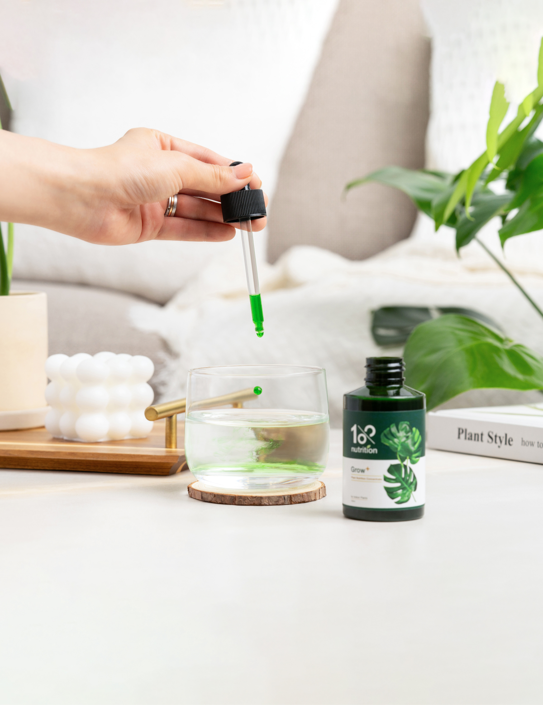

Grow
植物營養精華
Plant Nutrition Concentrate

滴
釋放綠色生長力

BUY NOW


一起享受
最棒的居家種植體驗
SHOP
NOW
精準營養學
Core Nutrition for Plants
本滿足成長關鍵

4大
植萃營養
-
棕櫚酸維他命A提升生理機能 加速成長代謝
-
紫根萃取物提高細胞活性 減緩細胞老化
-
海帶萃取物促進根系發育 強化健康防禦力
-
腐植土萃取物提高養分吸收率 改善土質防劣化
全株照護
天然萃取
不易致肥傷
14天有感
-
施肥量
50%↓根系生長茂密 有效吸收養分 -
成長
20%↑全株穩定成長 莖葉強健健康
數據來自30名使用者，一週使用2-3次，連續使用2週的自我評估解果
3
步驟補營養
How to Use
DRIP
將1cc精華滴入澆水壺
(1cc=半管，800ml水)
(1cc=半管，800ml水)
WATER
澆透土壤
每週1次，每次1cc
每週1次，每次1cc
SHAKE
搖勻成分，精準補給
14天見效

推薦好評
RECOMMENDATION
-
Kimberley這瓶根本是植物的滴雞精！
平常沒有太多時間照顧，現在一瓶
就可以給對營養，看植物越來越健康！ -
 Even以前總是照顧植物失敗，接觸1%
Even以前總是照顧植物失敗，接觸1%
nutrition後成功率大大提升，也
帶給我輕鬆照顧植物的信心！ -
LOUISE植物也需要好營養品！
使用3天明顯感受到 植物保持活力的持續性。 -
 Berry Mom大概兩週的時間，就感受到龜背芋 從營養不良漸漸的 變有光澤，而且越來越茁壯 ！看著植物健康長大好有成就感！
Berry Mom大概兩週的時間，就感受到龜背芋 從營養不良漸漸的 變有光澤，而且越來越茁壯 ！看著植物健康長大好有成就感！ -
Hello Cutie使用兩週後，圓葉花燭長高，新芽也順利發展！ 看見植物健康成長，超感動！
BUY NOW
建議用量
-
日常護理稀釋比例1:800
每兩週使用1次 -
換盆換土稀釋比例1:800 3~5天內最佳!
-
扦插分株稀釋比例 1:800
1.傷口乾燥一日
2.浸泡營養液
-
發芽育苗稀釋比例 1:500
補給所需養分，
健康成長
每株植物的特性不同，
第一次使用先以小範圍噴灑測試唷！
第一次使用先以小範圍噴灑測試唷！
常見問題
-
Grow+ 植物營養精華適合所有居家植物嗎？
水培也可以嗎？是的，大部分的植物都可以使用，水培植物也都可以！包含蔬菜、花卉、果樹；低肥需求植物（食蟲植物、沙漠植物、松柏類、葉蘭等），則不建議使用。 -
如何正確使用Grow+ 植物營養精華呢？在早晨或傍晚最佳，使用後不可置於高溫、烈日或暴曬環境，每次依照指示比例稀釋製成精華液，建議每1週使用1次，以獲得最佳效果。
-
稀釋後的植物營養液該如何存放？為保持最佳使用效果，建議您每次稀釋後立即使用完畢。使用一般自來水稀釋較容易滋生細菌，如使用過濾水則可存放較長時間。
-
如何儲存Grow+ 植物營養精華呢？請將Grow+ 植物營養精華存放在陰涼乾燥處，避免陽光直射和高溫。開封後建議在6個月內使用完畢，以保證植萃成分活性與效果。
-
已有固定施肥，是否可同時使用Grow+ 植物營養精華呢？沒問題的！當然可以同時使用。Grow+ 植物營養精華可幫助植物吸收營養，減少未來其他肥料的使用量。建議使用前先暫停施肥，先使用植物營養精華約2週後，再施少量肥料，觀察營養吸收狀況，進而調整未來肥料用量。